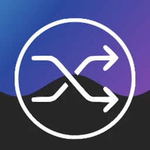

01
Attendre la bonne promo
Tu colles la fiche produit, tu fixes ton prix : il garde l'historique en graphique et ne t'alerte que quand le prix passe sous ta limite (ou baisse d'un certain pourcentage).
Fiche produit→Ton prix→Alerte

Il surveille les pages web à ta place et te prévient dès qu'elles changent : baisse de prix, retour en stock, nouvelle annonce. Gratuit, open source, chez toi.

changedetection.io surveille des pages web à ta place. Tu colles l'adresse d'une page, tu choisis à quelle fréquence la vérifier, et il te prévient dès qu'elle change : sur Telegram, Discord, par mail et plus de 85 autres services. Pour une fiche produit, il lit le prix et le stock, garde l'historique en graphique et ne t'alerte que si le prix passe sous ta limite ou si le produit revient. Tu peux aussi ne surveiller qu'une partie de la page, ignorer le bruit, suivre un PDF ou une API, et demander à une IA facultative de résumer ce qui a changé.
La méthode recommandée : une seule commande Docker (ou docker compose) sur un NAS, un mini PC, un serveur ou un Raspberry Pi. Interface web sur le port 5000, données dans un dossier à toi.
Gratuit, tout reste chez toiAvec pip (pip3 install changedetection.io) sur Linux ou Mac, et une procédure Windows sur le wiki. Pratique pour tester, mais il ne surveille que quand ton PC est allumé.
Pour testerLe même logiciel, hébergé par son créateur : 8,99 $ par mois, navigateur Chrome et proxys inclus, rien à installer. Tes pages surveillées sont alors sur leurs serveurs.
Payant, sans installationTu colles la fiche produit, tu fixes ton prix : il garde l'historique en graphique et ne t'alerte que quand le prix passe sous ta limite (ou baisse d'un certain pourcentage).
Pour une console, une carte graphique ou une édition limitée : la détection « retour en stock » te prévient dès que le bouton d'achat revient, avec une capture d'écran dans la notification.
Mairie, préfecture, université, règlement d'un concours : beaucoup d'annonces ne sont publiées que sur le site. Tu surveilles juste la zone des actualités, sans le menu ni le pied de page.
Tu surveilles la page carrières d'une entreprise ou une recherche sur un site d'annonces, avec un filtre sur des mots-clés : une alerte seulement quand un poste qui te correspond apparaît.
Nouvelle version d'un logiciel, avis de sécurité, PDF de conditions qui change, réponse d'une API : il compare mot par mot et peut même créer un flux RSS des changements.
Créé en janvier 2021 par Leigh Morresi (dgtlmoon), changedetection.io est devenu l'outil de référence pour surveiller des pages web chez soi. Il est financé par sa version hébergée payante et par des partenariats avec des fournisseurs de proxys.
Plus de 2 700 commits, version 0.70.3 publiée le 9 novembre 2026, des mises à jour presque chaque semaine.
Environ 35 800 étoiles, 2 250 forks et plus de 170 contributeurs sur GitHub ; extension Chrome et images Docker de LinuxServer.
Tout reste chez toi en auto-hébergement ; seules l'IA (si tu la branches), les notifications et les proxys éventuels passent par des services tiers.
Gratuit et open source, financé par l'abonnement hébergé à 8,99 $ par mois et par des liens partenaires vers des fournisseurs de proxys.
Près de cinq ans d'existence et très utilisé, mais toujours en version 0.x, avec plusieurs failles corrigées en 2026 : mises à jour régulières indispensables.
Comment on note : 5 critères notés sur 5, vérifiés sur GitHub, le README, le site officiel et les notes de version le 15 novembre 2026. La note sur 10 est la moyenne ramenée sur 10.
Bon pour : Surveiller autant de pages que tu veux, prix et stock compris, sans abonnement
Bon pour : Démarrer en deux clics, sans serveur
Bon pour : Surveiller depuis ton navigateur, sans installer de serveur
Bon pour : Une solution en ligne moins chère, si tu acceptes le cloud
Surveiller un site très souvent peut te faire bloquer : respecte les conditions d'utilisation des sites et garde une fréquence raisonnable.

Chaque vidéo RepoPop t'explique un dépôt GitHub utile en moins d'une minute, avec son kit comme celui-ci.